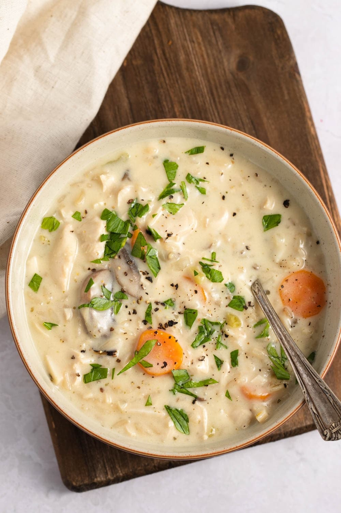

The exact lasagna recipe

Ingredients
- Butter
- Vegetables
- All-Purpose Flour
- Chicken Broth
- Cooked Wild Rice
- Boneless Chicken
- Spices
- Slivered Almonds
- Dry Sherry
- Half-and-Half
How to make chicken soup with wild rice
It's made with juicy chicken, wild rice, and a medley of veggies cooked in a creamy broth. And it's the perfect
combo of flavors and textures.
Yeah, you won't believe how fast this one comes together. So it's ideal for busy weeknights, too.
Steps
- Sauté the veggies: In a large saucepan, melt some butter over medium heat. Then add the
veggies and cook and stir for 5 minutes until they're slightly soft.
- Add the mushrooms: Now it's time to add the sliced mushrooms. Cook and stir for 2 more
minutes.
& simmer it for a few minutes to thicken.
- Make the broth: Stir the flour into the pan, then gradually pour in the chicken broth while
continuously stirring. This will thicken the soup.
- Simmer on low: Bring the mixture to a boil, then reduce heat to low and let it simmer.
- Add the chicken, rice, and spices: Finally, add the rice, cubed chicken, salt, spices,
almonds, sherry, and half-and-half. Let everything heat through, and you're ready to serve!
Go back to Homepage